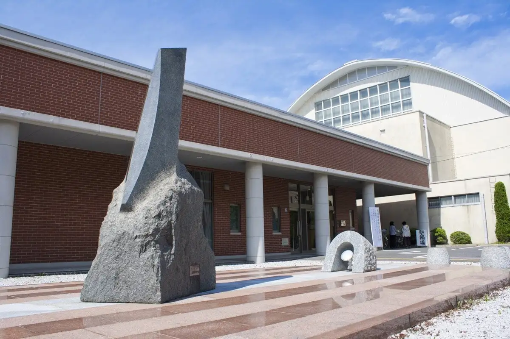
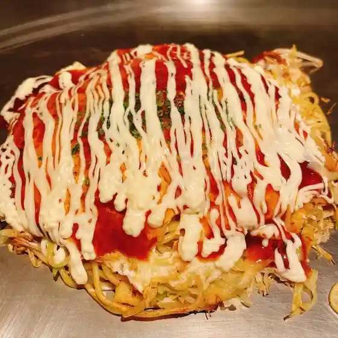
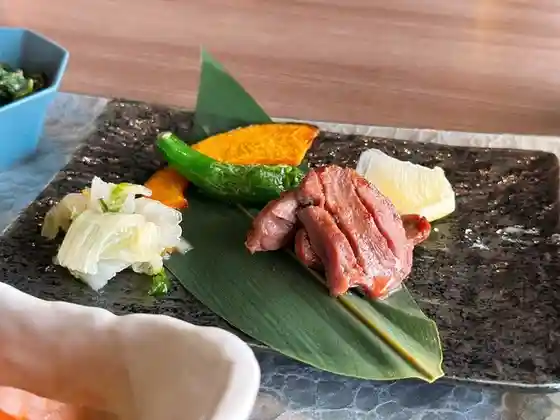
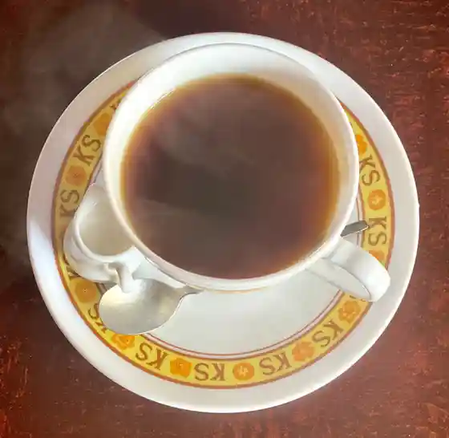
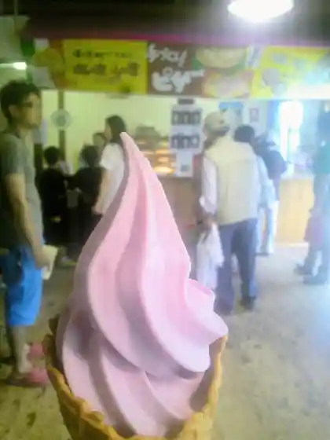
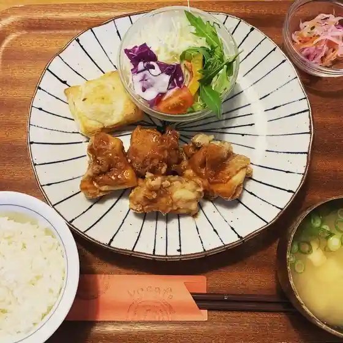
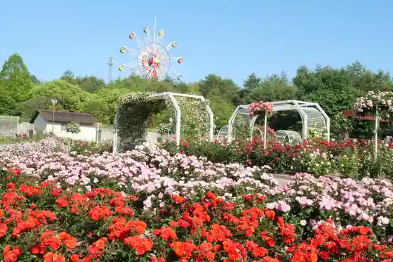
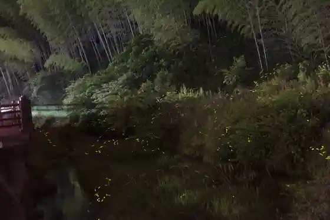
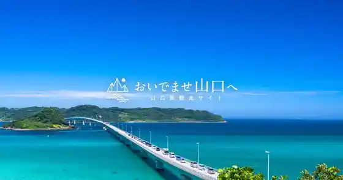

Waki
Waki · Yamaguchi
Waki
Highlighted on the Yamaguchi map.

Dining
鉄ぱん屋じゅう兵衛
鉄ぱん屋じゅう兵衛

ゾーナイタリア 蜂ヶ峯
ゾーナイタリア 蜂ヶ峯

和木ゴルフ倶楽部
和木ゴルフ倶楽部
中華食堂 和木
中華食堂 和木

珈琲館森
珈琲館森

はっちの家
はっちの家
ポニー サイド カフェ
ポニー サイド カフェ
マルキュウ 和木店
マルキュウ 和木店

ユカフェ
ユ Cafe
セブンイレブン 岩国和木３丁目店
セブンイレブン 岩国和木3丁目店
焼肉ダイニング リュウオー
焼肉ダイニング リュウオー
恵美
恵美
Teppanya Jube
Teppanya Jube
Chinese Restaurant Waki
Chinese Restaurant Waki
Yakiniku Dining Ryu o
Yakiniku Dining Ryu o
Alberco
Alberco
Tamagawa Ryotei
Tamagawa Ryotei
Megumi
Megumi
Coffee House Mori
Coffee House Mori
Sights
Hachigamine General Park

Waki Art Museum (Atoingu)
Hotaru Village

Yo Sen Tera

Myoken Shrine

Hikone Senshi Samurai Yuki Haka
Waki Town Hall